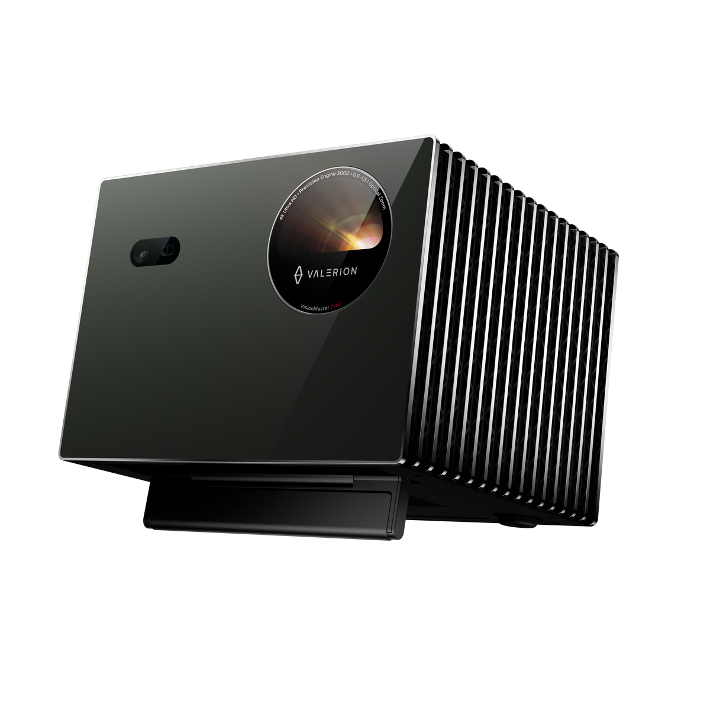
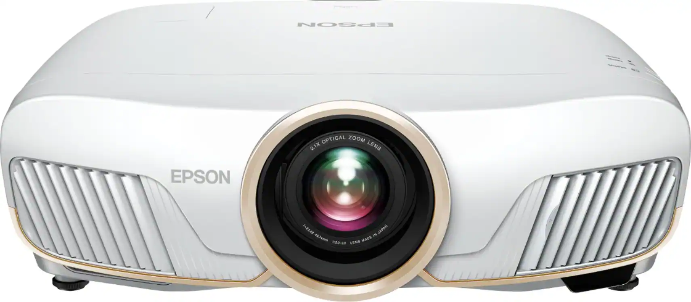

Home Projector head-to-head · Updated 2026-10-07 · Based on independent reviewer consensus

$2,389-$2,999
The highest-rated 4K projector in 2026 roundups with 535+ owner reviews. 15000:1 native contrast delivers blacks that cheaper DLP projectors cannot touch. 240Hz/4ms gaming response is the lowest latency in its class. The reference pick for a dedicated home theater.
Check Price on Amazon →
$2,399-$2,999
The videophile pick. True 3-chip 3LCD means no rainbow artifacts ever, and motorized lens shift makes installation effortless. Not the brightest, but in a dark room nothing touches its image purity.
🔍 Purchase link under verification
Highlighted rows show where they differ. Dimmed rows are effectively the same.
| Spec | Valerion VisionMaster Pro 2 | Epson Home Cinema 5050UB |
|---|---|---|
| Brightness 💡 higher lumens = watchable with lights on | 3000 ISO lumens, RGB triple laser | — |
| ContrastDIFFERS 💡 difference between darkest black and brightest white — higher = punchier image | 15000:1 native, Enhanced Black Level | Up to 1,000,000:1 dynamic |
| Gaming | 4ms input lag at 240Hz | — |
| Image | Up to 300 inches, 110% Rec.2020, ISF calibration | — |
| Lens 💡 move the image without moving the projector — flexible installation | — | Motorized lens shift, 2.1x zoom |
| Panel 💡 suction power unit — 20,000Pa is strong, 35,000Pa is the current max | — | True 3-chip 3LCD — zero rainbow effect |
| Placement | — | Most flexible installation in class |
The Valerion VisionMaster Pro 2 is the modern pick: RGB triple laser, 3000 ISO lumens, 4ms gaming input lag, and Dolby Vision — all at a similar price. The Epson 5050UB remains a home theater classic with unmatched installation flexibility (motorized lens shift, 2.1x zoom) and true 3-chip 3LCD with zero rainbow effect. Choose Valerion for laser brightness and gaming; choose Epson for dedicated theater rooms where placement flexibility is king.
The highest-rated 4K projector in 2026 roundups with 535+ owner reviews. 15000:1 native contrast delivers blacks that cheaper DLP projectors cannot touch. 240Hz/4ms gaming response is the lowest latency in its class. The reference pick for a dedicated home theater.
$2,389-$2,999
Check Price on Amazon →How we compare: Specs verified against manufacturer data and retailer listings (Oct 2026). Rankings reflect consensus across independent YouTube reviewers. Our methodology
← Back to all guides